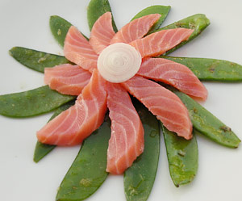

Geräucherter Lachs (Mitbringsel aus Kopenhagen) auf einem Kefenbett
5 von 6Kefen und eine Frühlingszwiebel in reichlich Butter ca. 10 dämpfen, mit Salz und Pfeffer abschmecken. Das Lachsfilet tranchieren und auf dem Gemüsebett anrichten.
